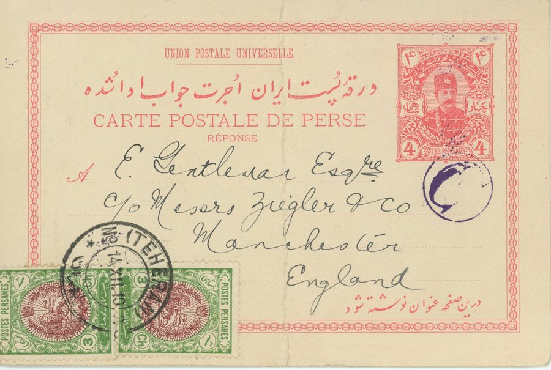
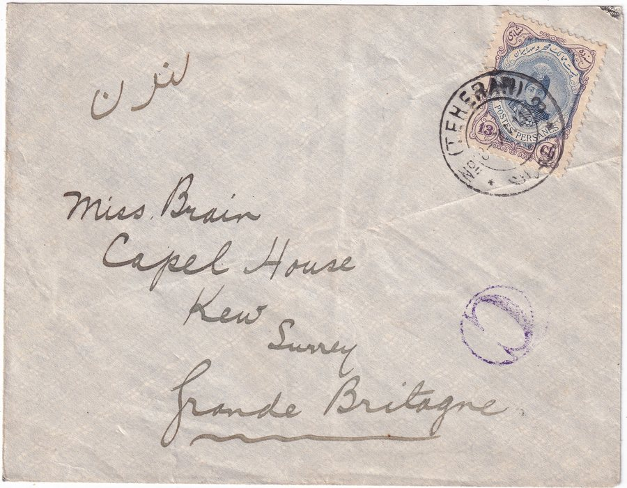

Skip to content
Persian Postal History
تاریخ پستی ایران
Home
Education
Rates
Censors
Forgeries
Collection
Resources
Censors
/
Persian Government
/
CP-04
CP-04
Applied by
Persian Government
Reads
Tehran control mark
Seen
1910–1911
Covers
5

To Manchester, England
14 Dec 1910, item 100001
Tehran to Isfahan
4 Mar 1911, item 40198
Tehran to Isfahan
1911, item 40183

Tehran to London
8 Nov 1911, item 40277
Tehran to Qom
16 Nov 1911, item 40130
Previous mark: CP-01
Next mark: CP-10
Close